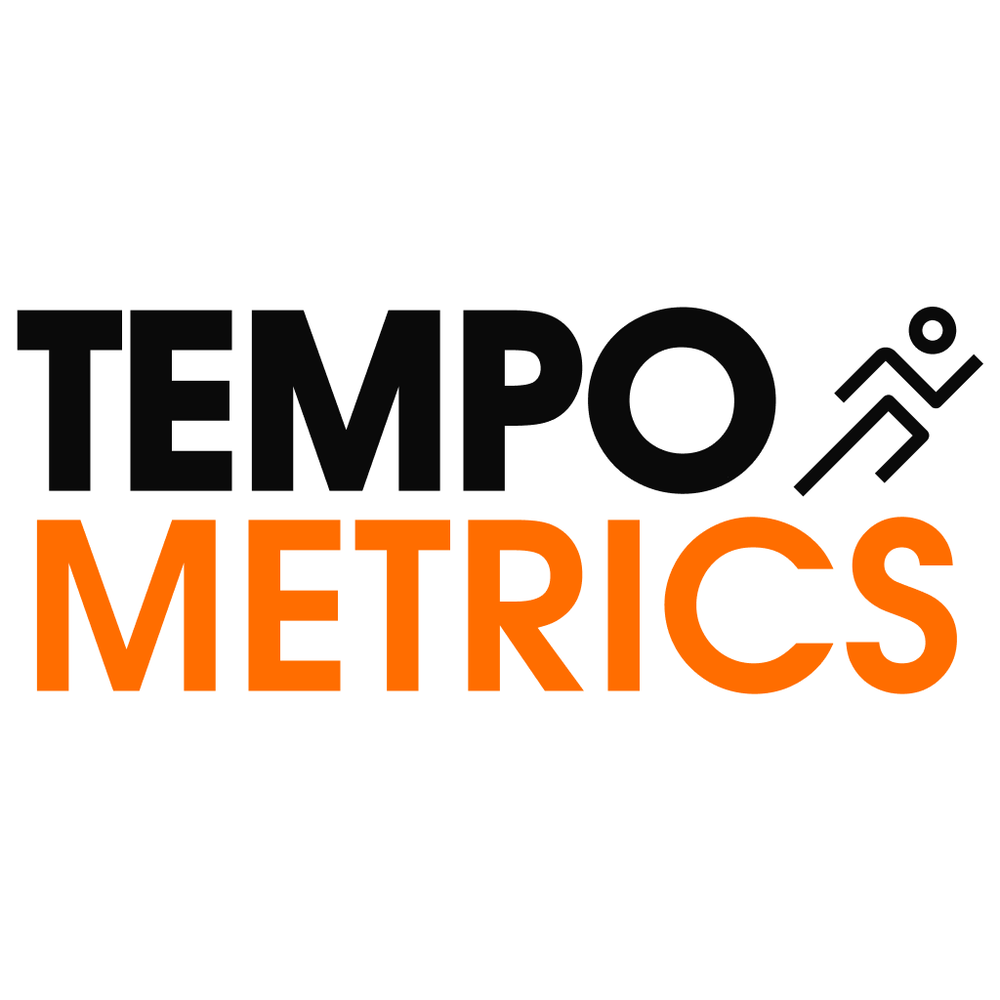
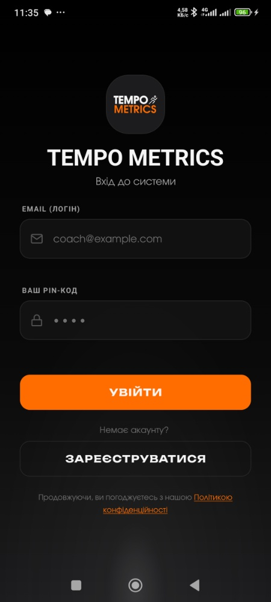
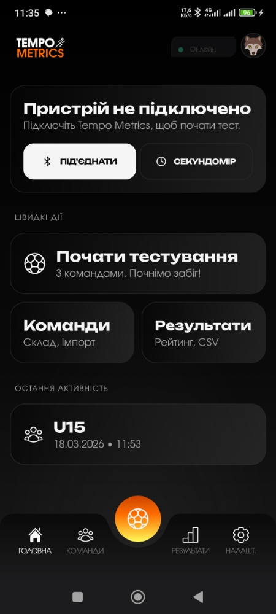
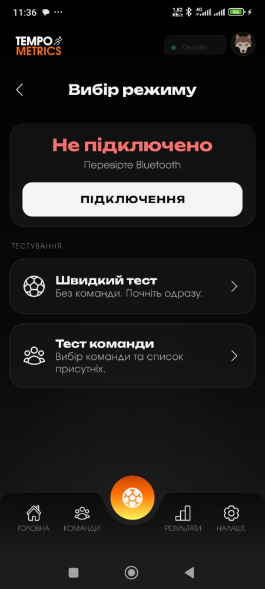
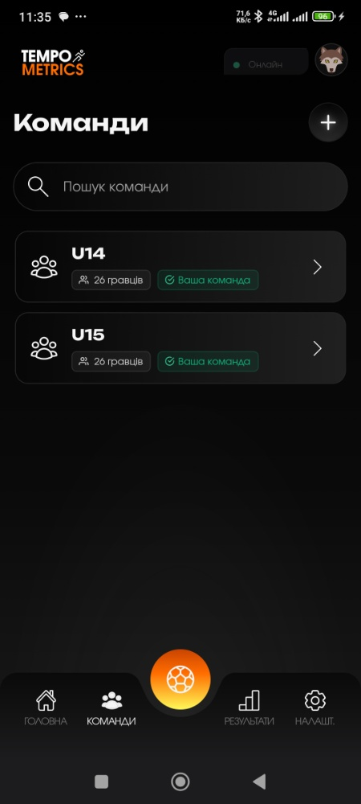
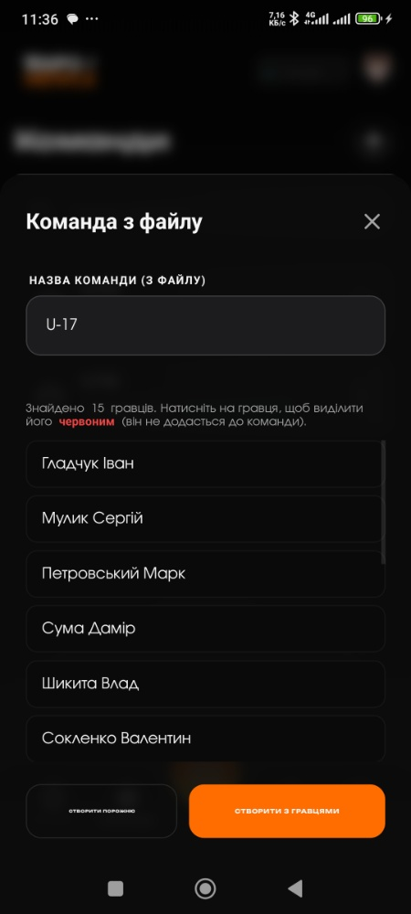
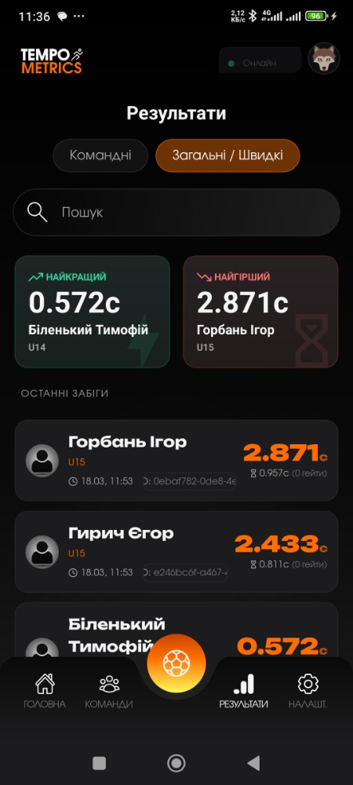
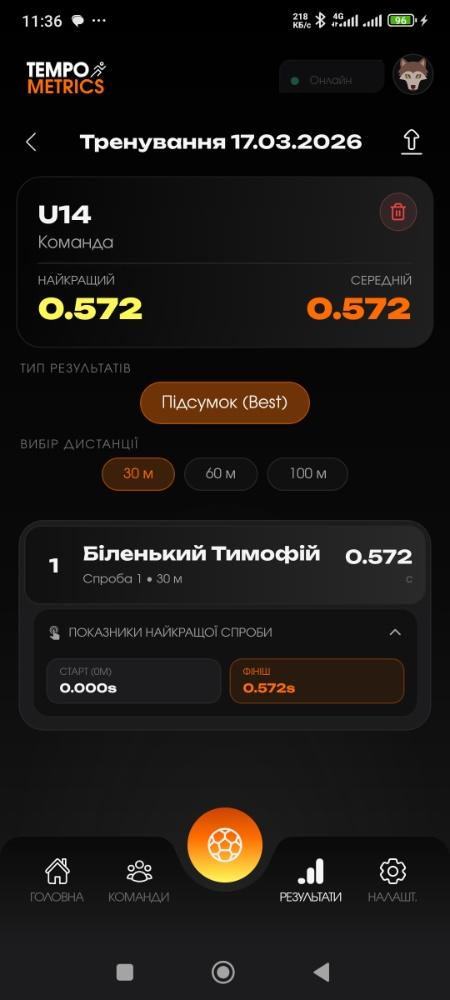
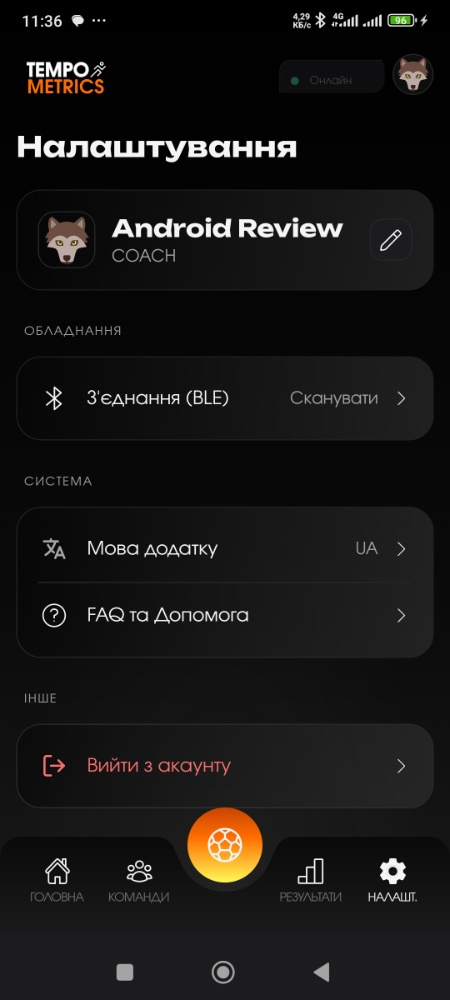

Сучасний крос-платформний мобільний застосунок для проведення спортивних тестувань, відстеження результатів та аналітики показників спортсменів.
Розроблено за підтримки Innovation HUB (наукової лабораторії ДУ «Житомирська політехніка») та футбольного клубу «Полісся».
© 2026 Tempo Metrics. All rights reserved. Developed and architected by Tsimbalyuck Ruslan.
.csv та .xlsx (Excel) файли, а також можливість ручного додавання.Для того, щоб запустити проєкт локально, виконайте наступні кроки:
npm install
npx expo start
У проекті налаштовані зручні команди для генерації різних версій Expo:
npm run build:prev
npm run build:dev
npm run build:both
npm run update:prev --message
Розроблено для покращення спортивних результатів та автоматизації процесів тестування.
Для коректної роботи застосунку з базою даних та бекендом необхідно налаштувати змінні середовища.
.env у кореневій папці проєкту.EXPO_PUBLIC_SUPABASE_URL=ваша_url_адреса_supabase
EXPO_PUBLIC_SUPABASE_ANON_KEY=ваш_анонімний_ключ_supabase
APP_VARIANT="Варіант Збірки програми (preview/development/production)"
EXPO_PUBLIC_UPDATE_URL="Посилання на проект expo.dev"
EXPO_PUBLIC_UPDATE_CHANNEL="Канал для оновлень expo.dev (preview/development/production)"
Проєкт побудовано за модульним принципом для зручного масштабування та підтримки. Нижче наведено опис основних директорій:
Tempo_Metrics ┣ assets/ # Статичні ресурси (шрифти, іконки, логотипи InHub та Полісся) ┃ ┣ fonts/ # Кастомні шрифти Figma ┃ ┣ icons/ # Іконки застосунку ┃ ┗ web/ # Файли для веб-версій / сторінки для email, privacy policy тощо ┣ src/ # Головна директорія з вихідним кодом ┃ ┣ constants/ # Глобальні константи проєкту ┃ ┣ context/ # Глобальні стани React (Context API) ┃ ┣ hooks/ # Кастомні React-хуки ┃ ┣ lib/ # Конфігурації сторонніх бібліотек (напр., ініціалізація Supabase) ┃ ┣ locales/ # Файли локалізації (українська та англійська мови) ┃ ┣ services/ # Логіка роботи з базою даних ┃ ┣ types/ # Інтерфейси та типи TypeScript ┃ ┣ utils/ # Допоміжні утиліти ┃ ┗ views/ # UI-компоненти та екрани застосунку з тулзами ┣ App.tsx # Точка входу в застосунок ┣ app.config.js.bak # Конфігурація Expo ┣ eas.json # Конфігурація для EAS Build (хмарна збірка Expo) ┣ global.css # Глобальні стилі (Tailwind / NativeWind) ┣ tailwind.config.js # Налаштування Tailwind CSS ┗ package.json # Залежності та скрипти збірки
views: Тут знаходиться весь візуальний інтерфейс. Усі екрани, дрібні компоненти лежать у цій директорії.services: "Серце" взаємодії з БД. Відповідає за CRUD-операції з Базою даних.lib та context: Відповідають за конфігурації бібліотек та глобальними змінами.locales: Директорія локалізації застосунку. Поділений на EN та UK.hooks: Бізнес-логіка застосунку. Кожен хук відповідає своєму Тулзу або Екрану.






